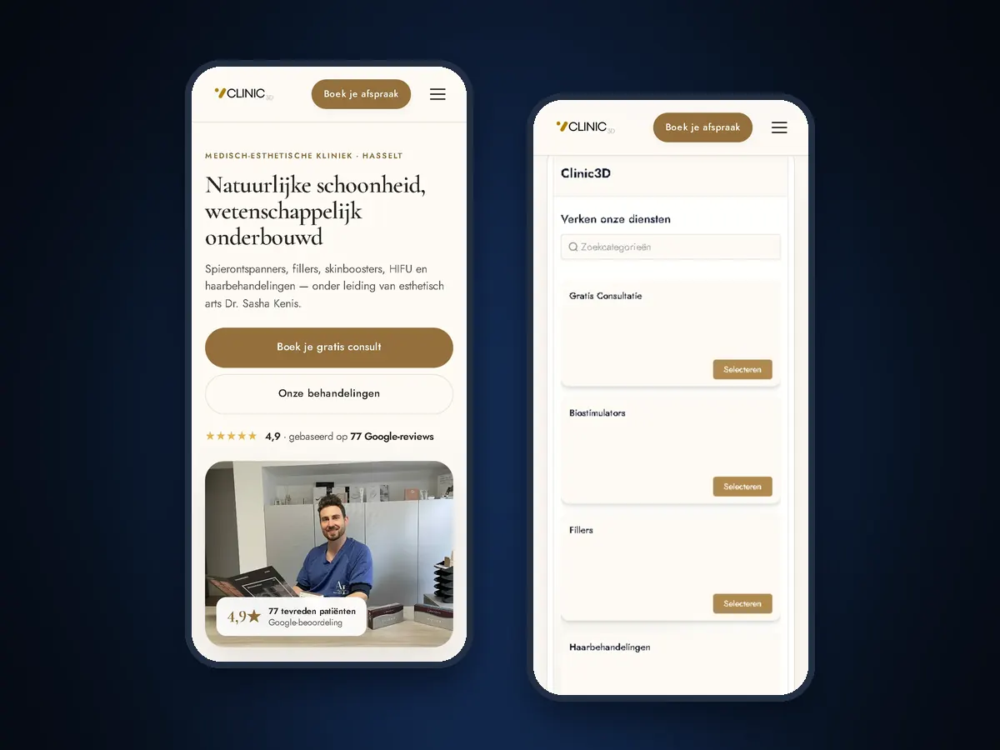

Website
€150 per maand
Pakket Online groeien, zonder opstartkost
Wie je bent, welke behandelingen je doet en wat ze kosten, en hoe patiënten je praktijk vinden. Rustig en duidelijk, zonder beloftes over resultaten.
Meer over websitesEen website laten maken voor je praktijk, met een online afsprakensysteem erin: patiënten boeken zelf een consult of behandeling, krijgen vanzelf een bevestiging en een herinnering, en jij houdt je handen vrij voor wie voor je zit.

In een praktijk telt elk uur in de agenda. Zo loopt een dinsdag als de agenda zichzelf bijhoudt.
Voorbeeld een dinsdag in een praktijk, van 8 tot 22 uur
Een voorbeeld, geen meting. De echte cijfers van Clinic3D staan hieronder.
Clinic3D is een medisch-esthetische kliniek in Hasselt en onze eerste klant. We bouwden de website, de online agenda en de automatische mails. Patiënten boeken sindsdien zelf.
Gemeten van 1 januari tot 20 september 2026 (263 dagen). De cijfers komen uit de rapportage van ons platform.
“227 afspraken in 104 dagen, geen enkele no-show, en mijn agenda zit voller dan ooit. Mijn klanten boeken nu zelf. Ik moet niets meer doen.”
Clinic3D is een kliniek, geen kinepraktijk. Een kinesist of osteopaat hebben we nog niet als klant. Maar de vraag is dezelfde: hoe raakt de agenda vol zonder dat jij de hele dag aan de telefoon hangt? En nul no-shows beloven we niet: wat bij Clinic3D lukte, is gemeten, geen garantie.
Website en online afsprakensysteem zitten samen in Online groeien. Chatbot en receptioniste zijn uitbreidingen: neem ze pas als je praktijk ze nodig heeft.
€150 per maand
Pakket Online groeien, zonder opstartkost
Wie je bent, welke behandelingen je doet en wat ze kosten, en hoe patiënten je praktijk vinden. Rustig en duidelijk, zonder beloftes over resultaten.
Meer over websitesInbegrepen in de €150
Zelfde pakket
Patiënten kiezen zelf een consult of behandeling met de juiste duur. Bevestiging, herinnering en opvolging vertrekken automatisch. Een voorschot bij langere behandelingen kan ook.
Meer over het afsprakensysteem+ €50 per maand
Bovenop Online groeien
Beantwoordt praktische vragen op je website, WhatsApp, Instagram en Messenger: hoe lang een eerste afspraak duurt, wat iemand meebrengt, waar de praktijk is. We stellen hem zo in dat hij bij medische vragen naar jou verwijst.
Meer over de AI-chatbot+ €150 per maand+ €750 eenmalig
300 belminuten inbegrepen, daarna €0,35 per minuut
Neemt op als jij in behandeling bent. Ze beantwoordt praktische vragen, stuurt de link om een afspraak te maken per sms en noteert wie teruggebeld wil worden. Medisch advies geeft ze niet.
Meer over de AI-receptionistePrijzen excl. btw. Online groeien zeg je maandelijks op.
Een voorbeeld met Kinepraktijk De Linde, een verzonnen praktijk uit onze blauwdruk. Zo kan een gesprek lopen met een nieuwe patiënt.
Goeiemorgen, Kinepraktijk De Linde, je spreekt met de digitale assistente. Waarmee kan ik je helpen?
Ik heb een voorschrift van mijn huisarts voor kine. Hoe maak ik een eerste afspraak?
Een eerste afspraak maak je zelf in onze online agenda. Ik stuur je de link per sms. Breng je voorschrift mee naar de eerste behandeling.
En mag ik met mijn knie al sporten tot dan?
Daar kan ik je geen advies over geven, dat bespreek je best met de kinesist. Ik noteer je vraag, dan belt de praktijk je terug.
Sms met de link naar de online agenda verstuurd. Vraag en terugbelverzoek genoteerd in het CRM.
Een praktijk werkt met gegevens die je niet zomaar laat rondslingeren. Dit doen we standaard, en dit laten we aan een jurist.
In het boekingsformulier vragen we alleen wat nodig is om een afspraak te maken. Bij het vak voor opmerkingen staat dat je patiënt er geen medische gegevens in zet: die bespreek je in de praktijk. Het vakje om nieuws of aanbiedingen te krijgen staat standaard uit en is niet nodig om te boeken.
De automatische mails en sms'en gaan over de afspraak: bevestiging, herinnering en opvolging. Wie geen berichten meer wil, laat het weten of schrijft zich uit, en dan stopt het. Statistieken, een kaart en een reviewblok op je site laden pas na toestemming via de cookiemelding, zoals op de site van Clinic3D.
Wat we niet doen: we zijn geen juristen en we beloven niet dat je praktijk daarmee in orde is met de GDPR. Laat je privacyverklaring en voorwaarden nakijken door een jurist; wij zetten ze op je site en linken ze in het boekingsformulier. Welke diensten wij zelf gebruiken om gegevens te verwerken, staat in onze privacyverklaring.
Lees ook: Alle diensten en prijzen · Pakketkiezer · Gratis demo · Online afsprakensysteem · Case Clinic3D · Onze privacyverklaring
In een gratis demo van 30 minuten via Teams tonen we je de online agenda, de herinneringen en de opvolging zoals ze bij Clinic3D lopen. Zonder verplichtingen.
Alle diensten en prijzen · Pakketkiezer · Gratis demo